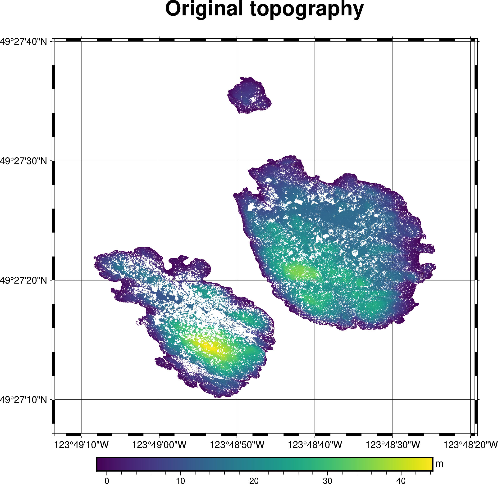
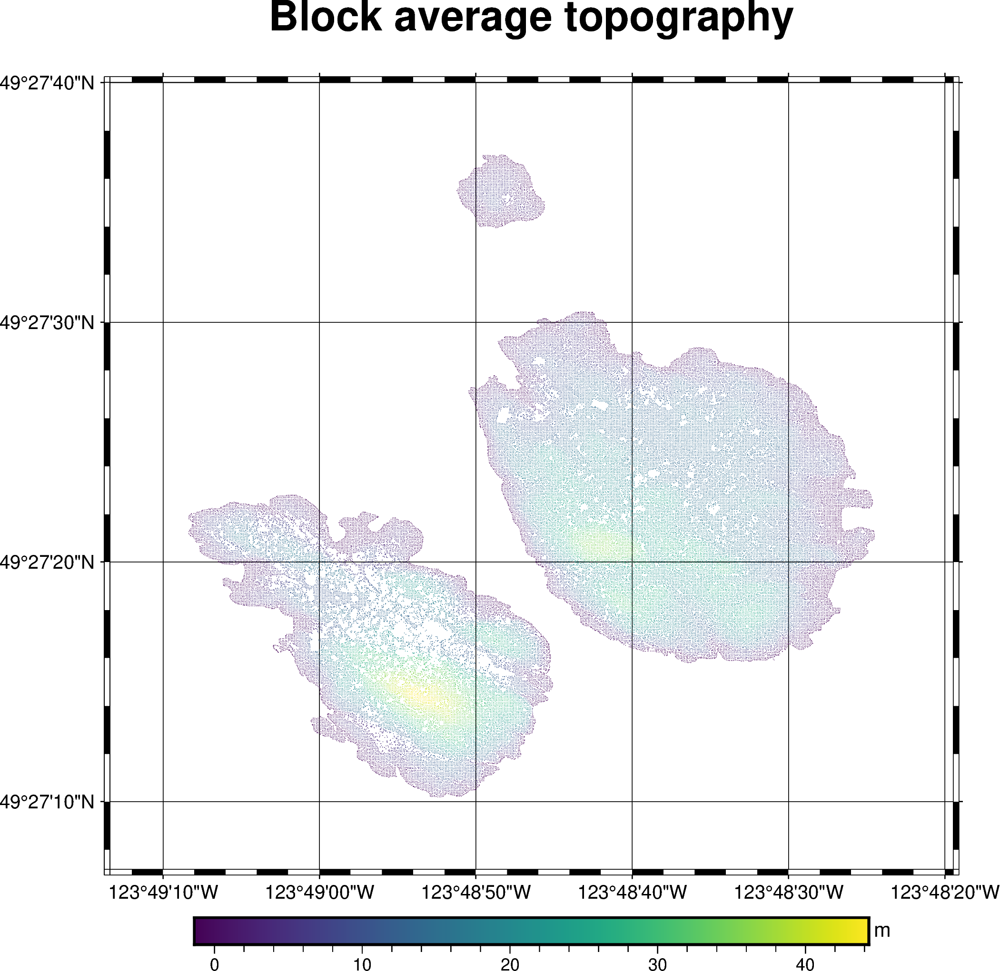

6. Calculate data averages in blocks#
Point or line data can often be oversampled, for example along flight lines or
ship tracks, or unevenly sampled across the data region. This can be undesired
for plotting or lead to biases in interpolation and other analyses. A safe way
to reduce (downsample) the data without causing
aliasing is to divide the data into
blocks and then take the mean or other statistic of the points that fall inside
each block. We’ll demonstrate how to do this with bordado.block_split
and pandas.
import ensaio
import pyproj
import pygmt
import pandas as pd
import bordado as bd
First, let’s get some topography data that we can use for this example
through ensaio.fetch_british_columbia_lidar:
fname = ensaio.fetch_british_columbia_lidar(version=1)
data = pd.read_csv(fname)
data
| longitude | latitude | elevation_m | |
|---|---|---|---|
| 0 | -123.813753 | 49.460263 | -0.67 |
| 1 | -123.813725 | 49.460274 | -0.96 |
| 2 | -123.813764 | 49.460254 | -0.78 |
| 3 | -123.813744 | 49.460262 | -0.61 |
| 4 | -123.813737 | 49.460265 | -0.62 |
| ... | ... | ... | ... |
| 829728 | -123.807407 | 49.455007 | -1.24 |
| 829729 | -123.807410 | 49.454995 | -1.25 |
| 829730 | -123.807416 | 49.454980 | -1.19 |
| 829731 | -123.807428 | 49.454966 | -1.21 |
| 829732 | -123.807432 | 49.454963 | -1.20 |
829733 rows × 3 columns
This is a LIDAR dataset from a few islands in British Columbia, Canada.
Let’s use bordado.get_region and bordado.pad_region to
extract the data bounding box and pad it a little. This will be useful
to make plots of the data without having the plot margins directly
touching the data.
region = bd.pad_region(
bd.get_region((data.longitude, data.latitude)),
pad=(5 / 3600, 3 / 3600),
)
print(region)
(-123.82038848888888, -123.80540841111112, 49.45199186666667, 49.46111413333333)
Let’s plot the data with pygmt to see what we’ve got:
fig = pygmt.Figure()
pygmt.makecpt(
cmap="viridis",
series=[data.elevation_m.min(), data.elevation_m.max()],
)
fig.plot(
x=data.longitude,
y=data.latitude,
fill=data.elevation_m,
cmap=True,
style="c0.01c",
projection="M15c",
region=region,
frame=["afg", "+tOriginal topography"],
)
fig.colorbar(frame=["af", "y+lm"])
fig.show()

Notice that the sampling is not uniform, with areas of denser sampling and areas with no points at all.
The dataset is in geodetic longitude and latitude coordinates so we
should first project it so we can use the regular Cartesian distance
calculations in block_split:
projection = pyproj.Proj(proj="merc", lat_ts=data.latitude.mean())
easting, northing = projection(data.longitude, data.latitude)
Now we can divide the data into 2 meter blocks. The labels variable
contains the index of the block to which each point belongs.
block_coordinates, labels = bd.block_split(
coordinates=(easting, northing),
block_size = 2,
)
data["block_id"] = labels
data
| longitude | latitude | elevation_m | block_id | |
|---|---|---|---|---|
| 0 | -123.813753 | 49.460263 | -0.67 | 183178 |
| 1 | -123.813725 | 49.460274 | -0.96 | 183179 |
| 2 | -123.813764 | 49.460254 | -0.78 | 182735 |
| 3 | -123.813744 | 49.460262 | -0.61 | 182736 |
| 4 | -123.813737 | 49.460265 | -0.62 | 183178 |
| ... | ... | ... | ... | ... |
| 829728 | -123.807407 | 49.455007 | -1.24 | 53901 |
| 829729 | -123.807410 | 49.454995 | -1.25 | 53459 |
| 829730 | -123.807416 | 49.454980 | -1.19 | 53017 |
| 829731 | -123.807428 | 49.454966 | -1.21 | 53017 |
| 829732 | -123.807432 | 49.454963 | -1.20 | 52575 |
829733 rows × 4 columns
Our dataset now contains the block indices (IDs) for each point.
To do a reduction operation (like mean, median, standard deviation, sum, etc),
we can use the pandas.DataFrame.groupby method:
block_data = data.groupby("block_id").mean()
block_data
| longitude | latitude | elevation_m | |
|---|---|---|---|
| block_id | |||
| 155 | -123.814695 | 49.452839 | -1.025000 |
| 156 | -123.814677 | 49.452836 | -0.687692 |
| 157 | -123.814654 | 49.452837 | -0.262667 |
| 158 | -123.814625 | 49.452836 | -0.527143 |
| 159 | -123.814594 | 49.452836 | -0.517500 |
| ... | ... | ... | ... |
| 183188 | -123.813461 | 49.460268 | -1.058182 |
| 183189 | -123.813437 | 49.460271 | -0.916400 |
| 183190 | -123.813410 | 49.460271 | -0.952000 |
| 183191 | -123.813386 | 49.460269 | -0.964545 |
| 183192 | -123.813363 | 49.460266 | -1.190000 |
62928 rows × 3 columns
This new dataset has the mean longitude, latitude, and elevation per 2 meter block. The reduced dataset looks like this:
fig = pygmt.Figure()
pygmt.makecpt(
cmap="viridis",
series=[data.elevation_m.min(), data.elevation_m.max()],
)
fig.plot(
x=block_data.longitude,
y=block_data.latitude,
fill=block_data.elevation_m,
cmap=True,
style="c0.01c",
projection="M15c",
region=region,
frame=["afg", "+tBlock average topography"],
)
fig.colorbar(frame=["af", "y+lm"])
fig.show()

Notice that now the points are more uniformly spaced and there are no areas with much higher point density.
See also
This is how the verde.BlockReduce class works!